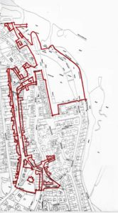

Town Significance
The Auld Kirk to Tayport Harbour
The area around the Auld Kirk comprises some of the oldest streets in Tayport from Butter Wynd, Rose Street and School Wynd area via Whitenhill, then the main thoroughfare of Castle Street, Castle Terrace and Broad Street to the Market Place, the Harbour and Inn Street. Although there have been changes to certain areas, the strong character and unique features of the area have a robust appeal but are somewhat lacking unity and quality in overall terms. A strong emphasis must be made over the disposition of Major listed Buildings within the area. The Auld Kirk and the Harbour itself forming the key linked features with a fairly unified townscape lying between the two, certain buildings of note in good condition, others being definetly ‘at risk’ and in need of attention. A traffic and parking management scheme, as well as townscape additions landscaping and civic realm improvements need to be given to the main features, the Kirk, the streets, and the Harbour to unify and restore a balanced future in terms of Social, Employment and Economic Sustainability within our community.

Buildings of Note:
- The Auld Kirk and Mortuary within Graveyard
- Erskine Ferry Port Church
- The Old Customs House 60 Castle Street
- Castle Terrace
- Cynicus Andersons Studios
- Clydesdale Bank
- Barbers Shop
- Catherine Place
- The Bell Rock
- The Old Inn
- The Seal House